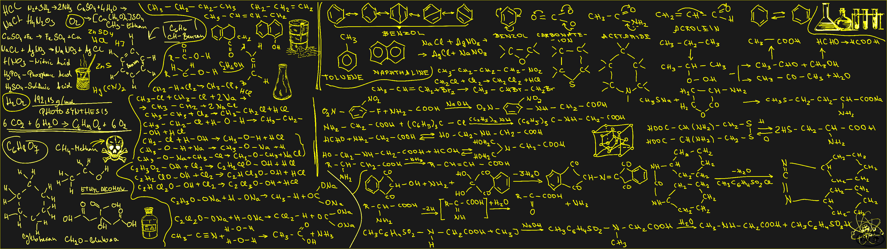
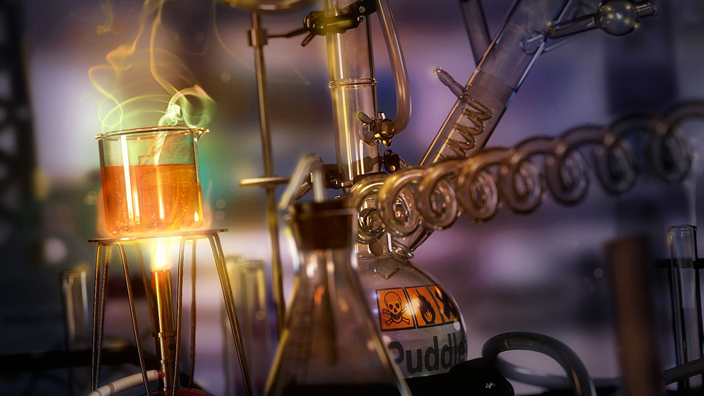

Chimia Organică
Chimia organică este ramura chimiei care se ocupă cu studiul structurii, proprietăților, reacțiilor de sinteză sau de descompunere a compușilor organici. Printre compușii organici se numără hidrocarburile (compuși formați doar din carbon și hidrogen), dar și o gamă largă de substanțe derivate de la hidrocarburi, care pot conține și oxigen, azot, sulf, fosfor, halogeni sau bor, precum și alte elemente, dar în cantități mult mai mici.

Abordarea modernă a chimiei organice presupune extinderea cunoștințelor legate de elementele care pot forma compuși organici. Astfel, a apărut chimia organometalică, ca o știință de trecere între chimia anorganică și organică. De asemenea, se mai studiază și metaloizii ca elemente din constituția compușilor organici.
 Studiul chimiei organice este necesar într-o gamă largă de domenii, întrucât ajută la fabricarea multor produse comerciale (precum cele farmaceutice, petrochimice și derivați ai lor, plastice și explozivi). De asemenea, chimia organică este o știință de legătură, fiind punctul de plecare pentru alte științe: chimia organometalică, biochimia, farmacologia, chimia polimerilor, știința materialelor, etc.